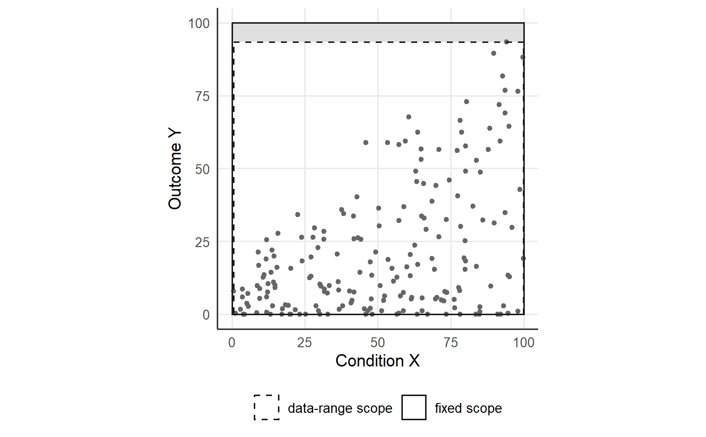

2 Cases, scope and the reverse-L scatter
A necessity analysis rests on n observed cases (X_i, Y_i), i = 1, ..., n, where X is the candidate necessary condition and Y is the outcome (Deja 2026b). Each case is one point in the scatter of the condition against the outcome. QNCA treats the upper-left configuration of NCA, in which a high outcome requires a high condition, so the empty zone of a necessity claim lies in the upper-left corner of the scatter (Dul 2016; Deja 2026b).
The analysis covers the cases inside a scope, the rectangle S = [x_min, x_max] x [y_min, y_max] of condition and outcome values (Dul 2016, 2020). The scope enters the analysis twice. The frontier is evaluated on an ordered grid of outcome targets from y_min to y_max, and the effect size divides the area of the empty zone by the area of the scope (Deja 2026b).
2.1 The generator of the synthetic data
The function generate_reverse_L() draws cases with the reverse-L pattern of a necessary condition. The condition X is uniform on the interval from 0 to 100. The outcome Y is the fraction U^k of the line ci + cs * X, where U is uniform on the unit interval, plus Gaussian noise with standard deviation noise, and both variables are clamped to the interval from 0 to 100. With the defaults ci = 15, cs = 0.85, k = 2 and noise = 4, the line rises from 15 to 100 across the condition, and the exponent k = 2 pushes most outcomes toward the floor of the scale. A call to set.seed() before the generator fixes the draw.
library(qnca)
set.seed(1)
g <- generate_reverse_L(200)
summary(g)
#> X Y
#> Min. : 1.308 Min. : 0.000
#> 1st Qu.:29.370 1st Qu.: 2.779
#> Median :50.549 Median :11.384
#> Mean :51.766 Mean :18.737
#> 3rd Qu.:74.248 3rd Qu.:30.423
#> Max. :99.268 Max. :85.250The generated condition covers nearly the whole interval from 0 to 100, whereas the generated outcome reaches 85.25 at most, because a case approaches the line only when the fraction U^k lies near 1. The outcomes cluster near the floor, with a median of 11.384, and the cases fill the lower-right triangle of the scatter.
The guide uses the 200 cases of the repository dataset, which the Python version of the same generator draws from the same model. The bounds of two candidate scopes follow from the observed values of the dataset and from the measurement scale.
d <- read.csv("https://raw.githubusercontent.com/MarekDejaUJ/qnca/main/data/qnca_dataset_n200.csv")
scope_data <- c(x_min = min(d$X), x_max = max(d$X), y_min = min(d$Y), y_max = max(d$Y))
scope_fixed <- c(x_min = 0, x_max = 100, y_min = 0, y_max = 100)
round(rbind(data_range = scope_data, fixed = scope_fixed), 3)
#> x_min x_max y_min y_max
#> data_range 0.543 99.91 0 93.368
#> fixed 0.000 100.00 0 100.0002.2 Data-range scope and fixed scope
The data-range scope takes the bounds from the smallest and largest observed values of X and Y. For the 200 cases, the data-range scope runs from 0.543 to 99.91 on the condition and from 0 to 93.368 on the outcome. The fixed scope takes the bounds from the measurement scale, here the square [0, 100]^2. The two rectangles nearly coincide along the condition axis, and the fixed scope adds an empty band of outcome values from 93.368 to 100.
rects <- data.frame(
scope = factor(c("fixed scope", "data-range scope"),
levels = c("data-range scope", "fixed scope")),
xmin = c(0, scope_data[["x_min"]]), xmax = c(100, scope_data[["x_max"]]),
ymin = c(0, scope_data[["y_min"]]), ymax = c(100, scope_data[["y_max"]])
)
ggplot() +
annotate("rect", xmin = 0, xmax = 100, ymin = max(d$Y), ymax = 100, fill = "grey88") +
geom_point(data = d, aes(X, Y), size = 1.2, colour = "grey40") +
geom_rect(data = rects, aes(xmin = xmin, xmax = xmax, ymin = ymin, ymax = ymax,
linetype = scope),
fill = NA, colour = "grey10", linewidth = 0.5) +
scale_linetype_manual(values = c("data-range scope" = "dashed", "fixed scope" = "solid")) +
coord_equal(xlim = c(0, 100), ylim = c(0, 100)) +
labs(x = "Condition X", y = "Outcome Y", linetype = NULL) +
theme(legend.position = "bottom")
Figure 2.1: The 200 cases of the synthetic dataset with the data-range scope (dashed rectangle) and the fixed scope [0, 100]^2 (solid rectangle). The shaded band above the largest observed outcome belongs to the fixed scope only and holds no case.
2.3 How the scope changes the effect size
The CE-FDH effect size of NCA divides the area of the empty zone left of the CE-FDH ceiling by the area of the scope, and the function nca_ce_fdh_d() integrates the empty zone exactly (Dul 2016). The QNCA effect size d_pi applies the same ratio to the frontier at the tolerance pi. At pi = 1 the QNCA frontier is the CE-FDH ceiling, and qnca() integrates the frontier by the trapezoid rule over a grid of 50 outcome targets (Deja 2026b). The argument B = 0 skips the permutation test.
area <- function(s) unname((s[2] - s[1]) * (s[4] - s[3]))
effects <- data.frame(
scope = c("data range", "fixed"),
scope_area = c(area(scope_data), area(scope_fixed)),
ce_fdh_d = c(nca_ce_fdh_d(d$X, d$Y, scope = NULL),
nca_ce_fdh_d(d$X, d$Y, scope = scope_fixed)),
qnca_d_pi = c(qnca(d$X, d$Y, pi = 1, B = 0, scope = NULL)$d_pi,
qnca(d$X, d$Y, pi = 1, B = 0, scope = scope_fixed)$d_pi)
)
effects$empty_zone <- effects$ce_fdh_d * effects$scope_area
transform(effects, scope_area = round(scope_area, 1), ce_fdh_d = round(ce_fdh_d, 4),
qnca_d_pi = round(qnca_d_pi, 4), empty_zone = round(empty_zone, 1))
#> scope scope_area ce_fdh_d qnca_d_pi empty_zone
#> 1 data range 9277.8 0.4542 0.4561 4213.5
#> 2 fixed 10000.0 0.4927 0.4941 4927.4Under the data-range scope the CE-FDH effect size is 0.4542, and under the fixed scope the CE-FDH effect size is 0.4927. The QNCA effect size at pi = 1 moves in the same direction, from 0.4561 to 0.4941, and the small gap between each QNCA value and the exact CE-FDH value is the discretisation of the 50-point grid. Normalisation by the scope area makes the effect size dimensionless, and the value of the effect size still depends on the scope and on the calibration of the scope bounds (Deja 2026b).
A change of the rectangle changes the denominator of the effect size and can change the numerator (Dul 2016; Deja 2026b). For the 200 cases, the scope area grows from 9277.8 to 10000 and the empty-zone area grows from 4213.5 to 4927.4. The relative growth of the empty zone exceeds the relative growth of the scope area, so the effect size rises under the fixed scope.
2.4 The top band of a fixed scope
Under a data-range scope the largest observed outcome fixes the top of the rectangle, and every target of the grid has at least one successful case. Under a fixed scope that extends above the largest observed outcome, the targets of the top band have zero successful cases, and the CE-FDH convention counts the top band as empty with the required level x_max (Deja 2026b). The argument x_max of qnca_frontier() applies the convention: at every target above the largest observed outcome the frontier equals x_max. A call without x_max keeps the last finite value of the frontier.
targets <- c(90, 95, 100)
rbind(fixed_scope = qnca_frontier(d$X, d$Y, pi = 1, y_grid = targets, x_max = 100),
without_x_max = qnca_frontier(d$X, d$Y, pi = 1, y_grid = targets))
#> [,1] [,2] [,3]
#> fixed_scope 94.05944 100.00000 100.00000
#> without_x_max 94.05944 94.05944 94.05944At the target 90 the frontier is 94.05944, the lowest condition value among the cases with Y >= 90. At the targets 95 and 100 the fixed scope sets the frontier to 100. The function qnca() passes the condition bound x_max of the scope to the frontier, so the effect size under the fixed scope counts the top band as empty. Between consecutive grid points the frontier is the linear interpolant of the two endpoints, and the effect-size integral is therefore a trapezoid sum over the grid (Deja 2026b).
The growth of the empty zone splits into the contributions of the two moved bounds.
round(c(top_band = (100 - max(d$Y)) * (100 - 0),
x_min_shift = (min(d$X) - 0) * (max(d$Y) - 0),
growth = diff(effects$empty_zone)), 1)
#> top_band x_min_shift growth
#> 663.2 50.7 713.9The top band contributes 663.2 area units. The shift of x_min from 0.543 to 0 widens the empty zone by 50.7 units along the observed outcomes, because the empty zone at each target extends from x_min to the CE-FDH ceiling. The two contributions sum to the growth of 713.9 units.
2.5 Choosing the scope
The bounds of the scope follow the data or external theoretical anchors, and the analyst fixes the bounds before calculating the effect size (Deja 2026b). Calibrated bounds are preferable when the measurements have interpretable anchors, for example calibrated composite scores and set-membership scores whose anchors rest on substantive knowledge (Ragin 2008; Schneider and Wagemann 2012). The choice of the scope, like the choice of the tolerance, rests on substantive grounds stated before the analysis (Deja 2026b). For the synthetic data, the measurement scale from 0 to 100 supplies the anchors of the fixed scope [0, 100]^2, the scope of the strict-limit validation of QNCA against NCA (Deja 2026b). A fixed scope does not repair weak measurement (Deja 2026b).
2.6 The same call in Python and Julia
The Python package qnca and the Julia package QuantileNecessity compute the same effect sizes under the two scopes. The Python generator generate_reverse_l() with the seed 42 draws 100 cases and then 200 cases, and the second draw equals the 200 cases of the repository dataset, with a largest absolute difference of zero in both variables.
from urllib.request import urlopen
import numpy as np
from qnca import generate_reverse_l, nca_ce_fdh_d, qnca
url = "https://raw.githubusercontent.com/MarekDejaUJ/qnca/main/data/qnca_dataset_n200.csv"
X, Y = np.loadtxt(urlopen(url), delimiter=",", skiprows=1, unpack=True)
fixed = (0.0, 100.0, 0.0, 100.0)
print(round(nca_ce_fdh_d(X, Y), 4), round(nca_ce_fdh_d(X, Y, scope=fixed), 4))
print(round(qnca(X, Y, pi=1.0, B=None).d_pi, 4),
round(qnca(X, Y, pi=1.0, B=None, scope=fixed).d_pi, 4))
rng = np.random.default_rng(42)
generate_reverse_l(100, rng=rng)
X2, Y2 = generate_reverse_l(200, rng=rng)
print(np.max(np.abs(X - X2)), np.max(np.abs(Y - Y2)))
#> 0.4542 0.4927
#> 0.4561 0.4941
#> 0.0 0.0using QuantileNecessity, Downloads, DelimitedFiles
url = "https://raw.githubusercontent.com/MarekDejaUJ/qnca/main/data/qnca_dataset_n200.csv"
data = readdlm(Downloads.download(url), ',', Float64; skipstart = 1)
X, Y = data[:, 1], data[:, 2]
fixed = (0.0, 100.0, 0.0, 100.0)
println(round.([nca_ce_fdh_d(X, Y), nca_ce_fdh_d(X, Y; scope = fixed)]; digits = 4))
println(round.([qnca(X, Y; pi = 1.0, B = 0).d_pi,
qnca(X, Y; pi = 1.0, B = 0, scope = fixed).d_pi]; digits = 4))
#> [0.4542, 0.4927]
#> [0.4561, 0.4941]